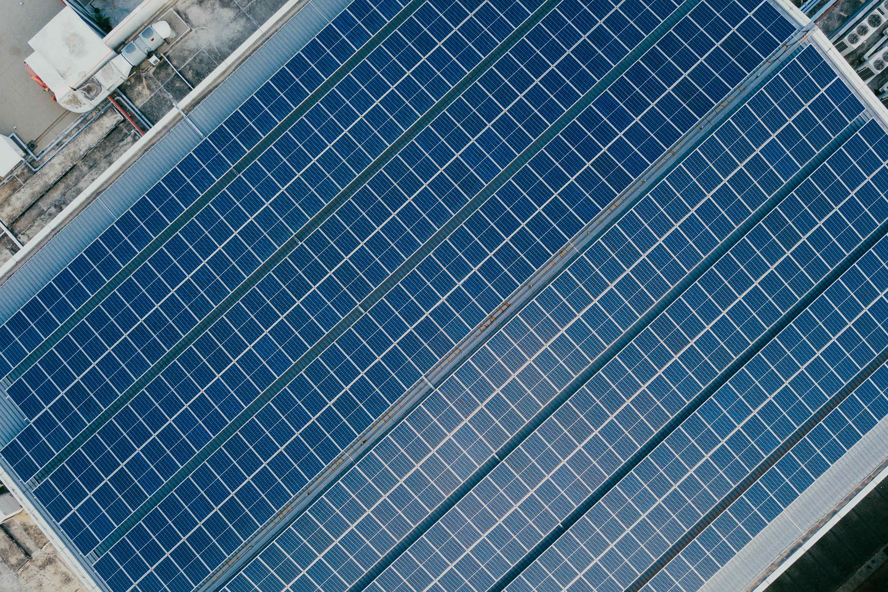
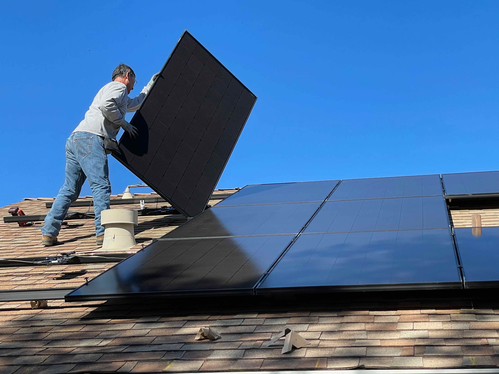

Solar Panel System
Solar Panel System
How long do solar panels last?
The average lifetime of solar panels is 15 years. This means you can expect to pay less for electricity for the first 15 years and then your solar panels will continue to create a steady stream of clean energy for years to come. This makes it important to buy from a reputable company and make sure that your installation is done by a professional—someone who has done many installations before and knows exactly what needs to be done.
What affects the life of the solar system?
Solar panel life, inverter life, cable quality, battery life are very important.You need to think about your solar power system 's longevity when you are planning to install something for the environment, such as a solar panel. The life of the batteries is also very important for the solar panel system you want to install in your home.
Solar Panel Warranty Period
it is time to decide which type of solar panels and batteries you need for your home or business. The warranty period also varies from product to product. You should therefore choose the best solar panel, inverter and battery that suits your needs and budget by reading reviews on forums or talking directly to other people who have used that particular brand. To get the best efficiency from your solar panel, you must clean them frequently. Avoid scraping them or damaging them by using special pads that can be found in tool shops and home improvement stores. You also need to spot check whether there are dust particles on the surface of your panels at least every two weeks.
Solar Panel System Maintenance
The lifespan of solar panels depends on many factors, such as weather conditions and sun exposure. The lifespan of solar panels is usually expressed in years by manufacturers. The general rule is that they last around 20 years on average, but it could go much longer than that depending on the location of your project and its maintenance requirements. It’s important to choose a solar panel system with a good warranty period, but it can also be a good idea to look for quality brands that have a long warranty on their products.
Solar Panel Cleaning
Keeping your solar panels clean and protected is not only important for the health of your system, but also for their long life. Water that drips from the cables can damage them even more than rain, so if you do not use a water screen, make sure to use a drip shield. This will block any water from touching the connections on the product and make it easier to clean up after heavy rains.

This will extend the life of your solar power system and make it more efficient. Sunlight comes from all directions and often reflects off the panels towards your roof, which is why you should clean them regularly.

Solar panels have a limited lifetime, so you should have a backup plan. If they are not used, they will eventually break down as they get more and more damaged. There is no way to know exactly how much time solar panels will last because this depends on usage, weather and location.

Does the choice of solar panel matter?
Your solar panel will pack a punch to help you save money. Smaller panels with higher wattage may provide more power, but they are also more expensive and prone to breakages. When choosing between a general purpose, high-efficiency solar panel and a specific role-specific solar panel that is better at the job, it’s worth looking at weight and energy efficiency. The smaller 250W panels for example, are less bulky and generate less heat than the 800W SolarX ones. You can even get 300W portable solar chargers with your purchase
Source : Solar Power for Beginners